Yamwi (Yet Another Maxima Web Interface) é un proxecto consistente no desenrolo dun interface web ó Sistema de Cálculo Simbólico Maxima. Dito interface materialízase nun script escrito en php.
A instalación deste interface permitirá o acceso a procedementos matemáticos e gráficos a través da rede, tanto no eido do ensino como profesional.
Yamwi distribúese con licencia GNU-GPL.
Maxima é un sistema para manipular expresións simbólicas e numéricas, incluidas a derivación, integración, desenrolos de Taylor, transformadas de Laplace, ecuacións diferenciais ordinarias, sistemas de ecuacións lineais, polinomios, conxuntos, listas, matrices e tensores. Maxima acada resultados numéricos de alta precisión utilizando fraccións exactas, enteiros e números decimais de precisión arbitraria. Maxima pode debuxar funcións e datos en dúas e tres dimensións, así como compoñer animacións.
Maxima descende de Macsyma, o lexendario programa de cálculo simbólico desenvolvido a finais dos sesenta no Instituto Tecnolóxico de Massachusetts. Macsyma foi revolucionario no seu momento, e moitos outros sistemas, como Maple e Mathematica, inspiráronse nel.
A póla de Macsyma que leva o nome de Maxima foi mantida por William Schelter dende 1982 ata o seu pasamento en 2001. En 1998 obtivo permiso do Departamento de Enerxía para liberar o código con licenza GNU General Public License (GPL). Foron os sus esforzos e coñecementos os que fixeron posible que Maxima sobrevivise.
Maxima traballa sobre Linux, Mac e Windows. Anque o proxecto centra a súa atención no motor matemático, outros proxectos, varios deles aloxados tamén en Sourceforge, adícanse ó desenvolvemento de interfaces gráficas de usuario. Dende a páxina do proxecto se pode atopar toda a información e os ficheiros necesarios.
Algunhas capturas de pantalla de Maxima traballando sobre varios contornos:
Con Yamwi instalado do lado do servidor, será posible facer todo tipo de cálculos matemáticos e gráficos a través da web. Ademáis, o administrador poderá engadir novos módulos que permitan extender as capacidades de cálculo para cubrir necesidades concretas.
O acceso ás fontes cvs pódese facer dende Sourceforge. (Aínda non existe liberación oficial.)
Hai dous modos de traballo: que os resultados se amosen en formato ASCII ou que se dean con ficheiros binarios feitos con TeX. O administrador pode selecionar un deles despois de feita a instalación (véxase o ficheiro README no arquivo comprimido); por defecto, Yamwi amosa os resultados en formato TeX.
Capturas en modo TeX:
| 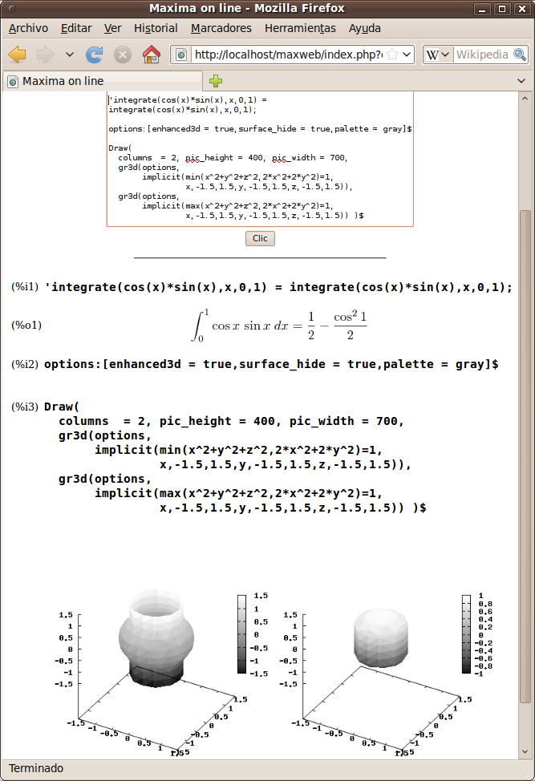 | 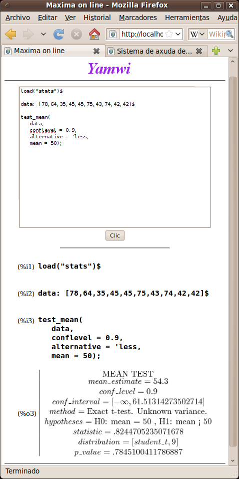 | 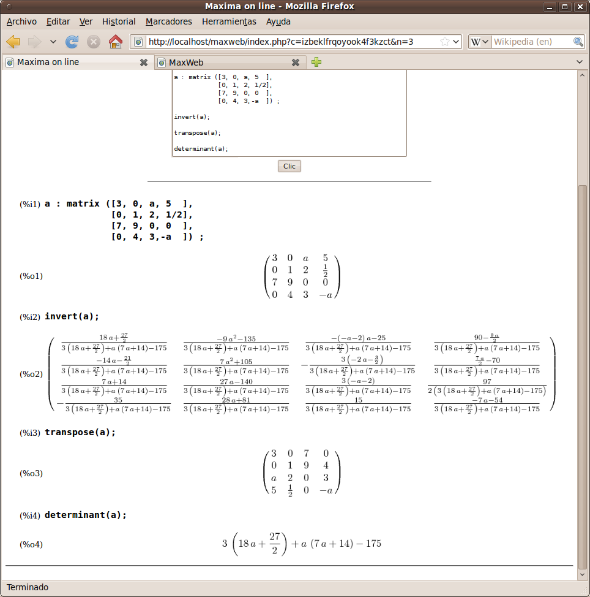 | 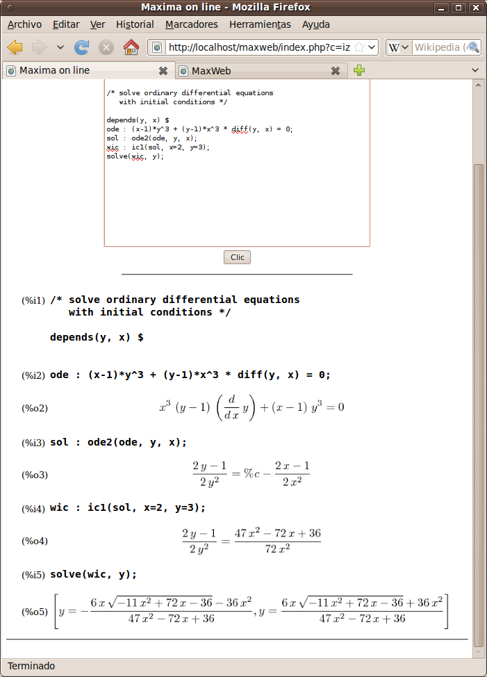 |
Capturas en modo ASCII Art:
| 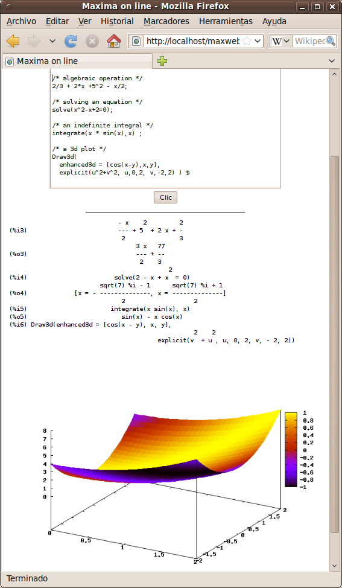 | 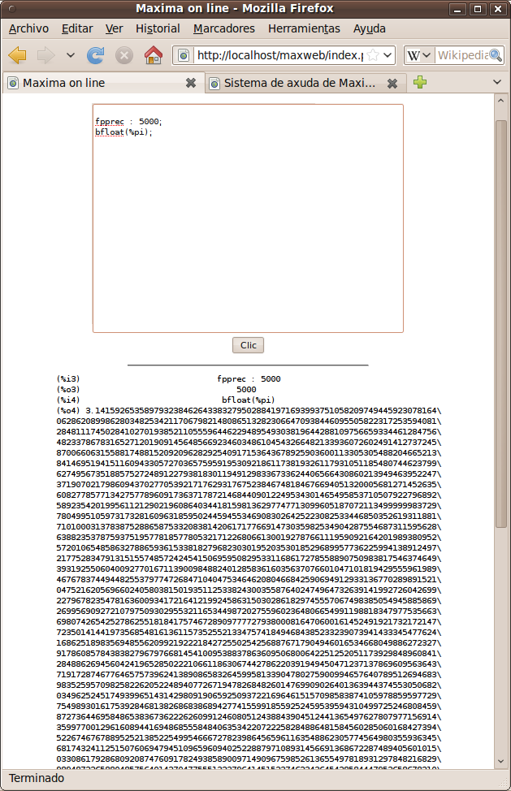 | 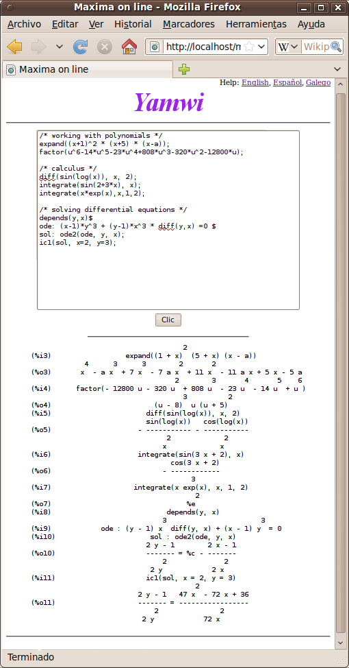 | 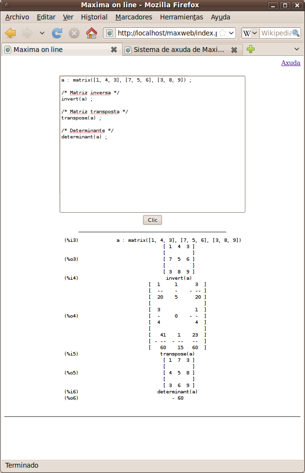 | 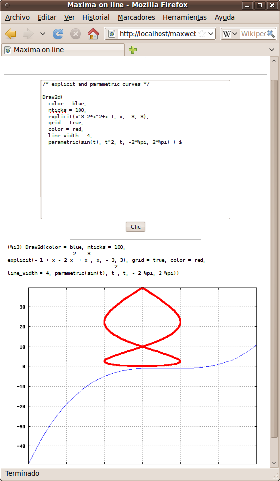 |
Capturas en modo ASCII Art cun teléfono móbil:
| 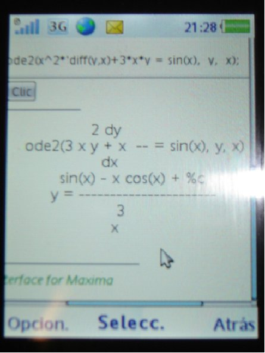 | 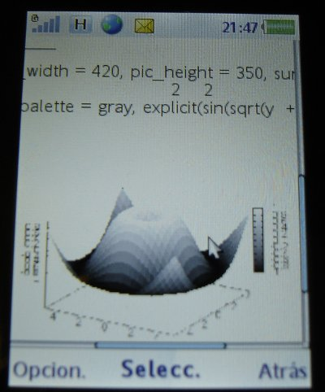 |
{kind=link}
{kind=link}
{kind=link}
{kind=link}
{kind=link}
{kind=link}
{kind=link}
{kind=link}
{kind=link}
{kind=link}
{kind=link}
{kind=link}
{kind=link}
{kind=link}
{kind=link}